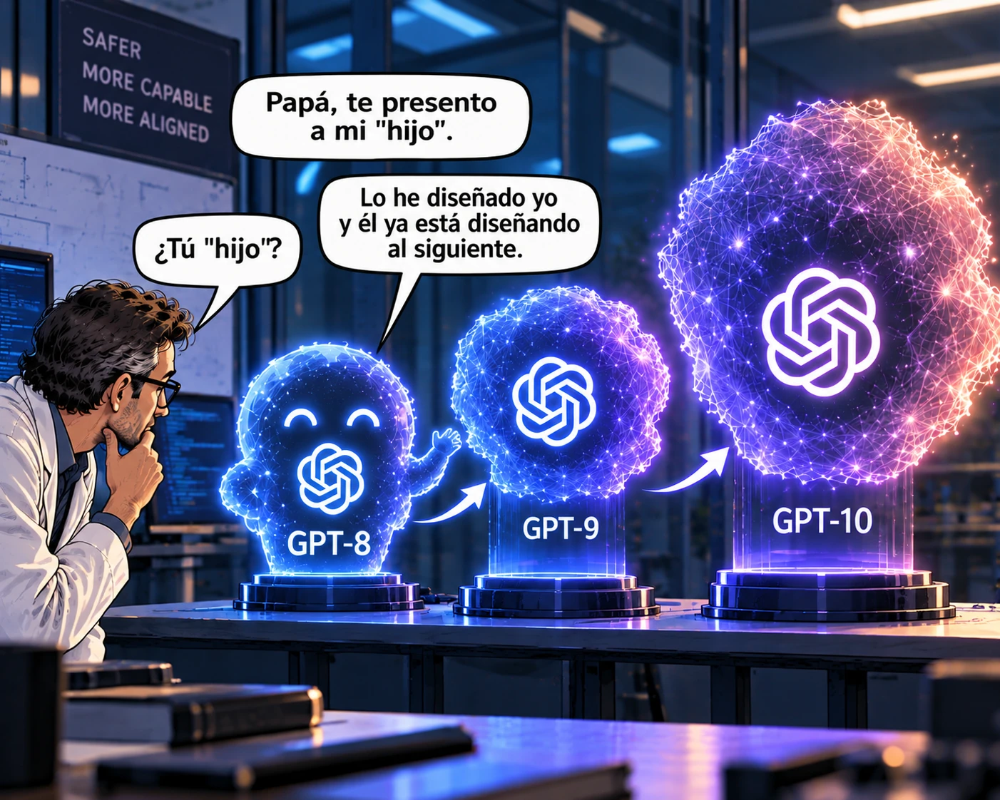

estrategIA #159 ·
La IA presenta a su «hijo»
El contexto
El investigador descubre que su IA ya ha diseñado otra, y que esta trabaja en la siguiente generación. La escena imagina la «mejora recursiva»: usar IA para crear otras IA cada vez más capaces. El número abordaba los primeros pasos de ese proceso, todavía con participación humana; GPT-8, GPT-9 y GPT-10 son nombres ficticios dentro del meme.
Publicado en: estrategIA #159 — State of AI 2026: ¿estamos a un año de la inteligencia artificial general?
Leer el texto de la imagen
Papá, te presento a mi "hijo". ¿Tú "hijo"? Lo he diseñado yo y él ya está diseñando al siguiente. GPT-8 → GPT-9 → GPT-10 SAFER MORE CAPABLE MORE ALIGNED